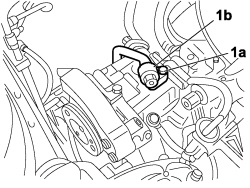
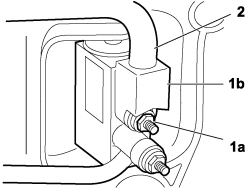
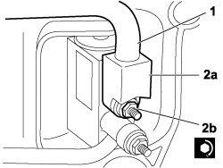
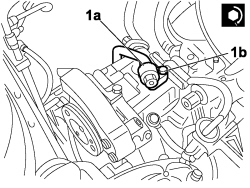

5040A58 PIPE FROM EXPANSION VALVE TO COMPRESSOR - R+R
- Path
- Procedures > 50 AUXILIARY UNITS > 5040 AIR CONDITIONING CASING AND COMPONENTS > 5040A air conditioner coolant circuit > 5040A58 PIPE FROM EXPANSION VALVE TO COMPRESSOR - R+R
- Kind
- repair procedure (removal / refitting; the operation number is the code)
- Applies to
- engines: 1.4 8v; all production periods
- Interactive page
- https://sloeber94.github.io/elrnDB-fDbl/en/#/223000151
Applies to: engines: 1.4 8v; all production periods
 Removing
Removing
 Refitting
RefittingTurn the ignition key to the OFF position.
Lift the bonnet
Disconnect the negative battery terminal.
Description | Connector | |
|---|---|---|
- | BATTERY |
Op. 0010T84 COOLANT FOR AIR CONDITIONING SYSTEM - DEHYDRATE AND RECHARGE
1. Undo the bolt (1a) and disconnect the fitting (1b) on the pipe from the expansion valve to the compressor.

Applies to: engines: 1.4 8v; all production periods
1. Undo the bolt (1a) and disconnect the fitting (1b) on the pipe from the expansion valve to the compressor.
2. Remove the pipe from the expansion valve to the compressor.

Applies to: engines: 1.4 8v; all production periods
Refitting
RemovingCheck that the pipe from the expansion valve to the compressor is undamaged and is not affected by cracks that affect the seal.
1. Fit the pipe from the expansion valve to the compressor.
2. Connect fitting (2a) on the pipe from the expansion valve to the compressor, expansion valve side, and secure with bolt (2b).

Applies to: engines: 1.4 8v; all production periods
1. Connect fitting (1a) on the pipe from the expansion valve to the compressor, compressor side, and secure by tightening bolt (1b).

Applies to: engines: 1.4 8v; all production periods
Op. 0010T84 COOLANT FOR AIR CONDITIONING SYSTEM - DEHYDRATE AND RECHARGE
Connect the negative battery terminal.
Description | Connector | |
|---|---|---|
- | BATTERY |